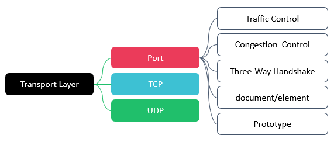
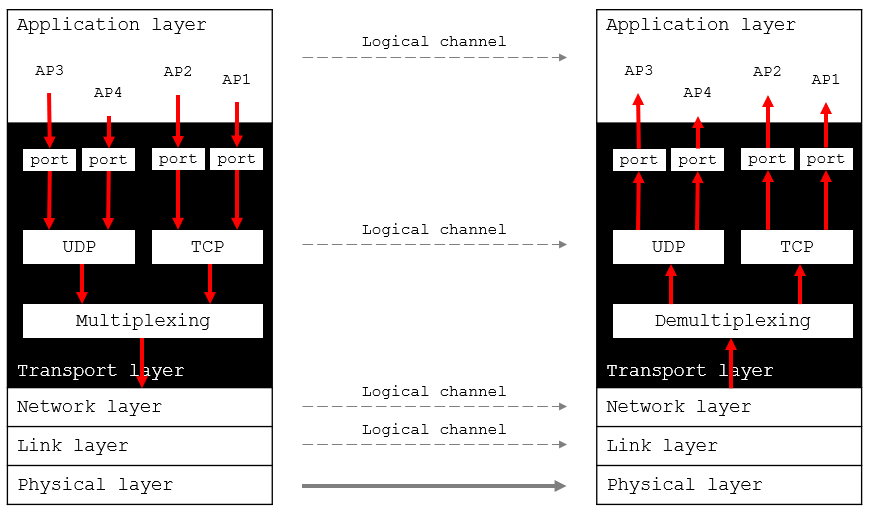

运输层向高层用户屏蔽了下面网络核心的细节

运输层以下各层的任务：解决主机到主机的通信
计算机通信实际上应用进程之间的通信
复用 Multiplexing：发送端将多个低速信号合并到一个高速信道上进行传输
分用 Demultiplexing：接收端将通过复用技术合并在一起的信号，重新分离成原来的各个独立信号
Transmission Control Protocol
传输控制协议
可靠信道
User Datagram Protocol
用户数据报协议
不可靠信道
| Application layer | |
| UDP | TCP |
| IP | |
| Data-link layer | |
| Physical layer | |
复用：多个应用层进程可同时使用运输层服务
分用：运输层能正确将数据交付给对应的应用进程
通过校验和检测传输错误
TCP还提供差错纠正机制
控制发送方发送速率，防止接收方缓冲区溢出
防止网络拥塞，提高网络利用率